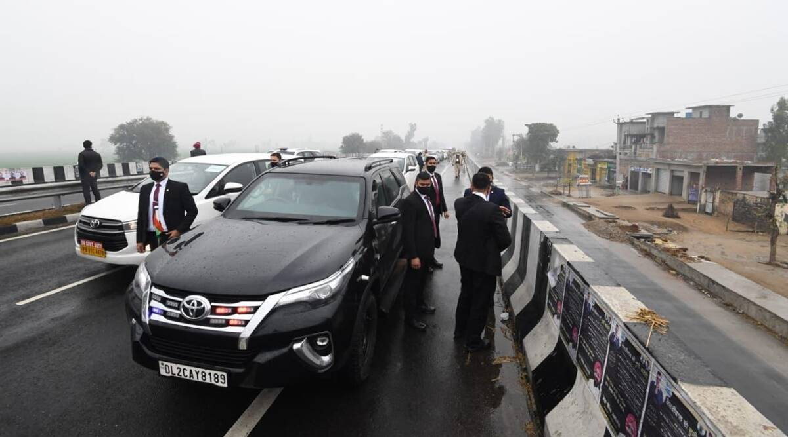

Updated: January 2, 2022 6:40:30 PM
The MHA said after this security lapse, it was decided the PM would head back to Bathinda airport. (Photo: ANI)
Alleging security breach during Prime Minister Narendra Modi’s visit to Punjab on Wednesday, the Ministry of Home Affairs has sought a report from the state government asking how the PM’s cavalcade was stranded on a flyover for over 15 minutes due to a protest, when his programme had been duly communicated to the state police.
“The PM’s schedule and travel plan was communicated well in advance to Punjab Government. As per procedure, they have to make necessary arrangements for logistics, security as well as keep a contingency plan ready. Also in view of the contingency plan Punjab Government has to deploy additional security to secure any movement by road, which were clearly not deployed,” the MHA said in a statement.
“The Ministry of Home Affairs taking cognisance of this serious security lapse has sought a detailed report from the state government. State Government has also been asked to fix responsibility for this lapse and take strict action,” it added.
Punjab Chief Minister r Charanjit Singh Channi, however, denied a security lapse, and said the PM’s plan to travel by road was made at the last minute. Speaking on a local TV channel, the CM said, “There has been no security lapse. I had been up late last night overseeing the security arrangements for his rally. The PM’s road plans were made at the last minute, he was earlier supposed to travel by helicopter.”
According to the MHA, the PM landed in Bathinda on Wednesday, from where he was to go to National Martyrs Memorial at Hussainiwala by helicopter. Due to rain and poor visibility, the PM waited for about 20 minutes for the weather to clear, MHA said.
Also Read |Protesting farmers stop BJP supporters from heading to PM Modi’s Ferozepur rally